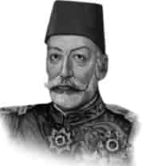

V. MEHMET REŞAT
Annesi : Gülcemal Kadın Efendi
Doğumu : 2 Kasım 1844
Vefatı : 3 Temmuz 1918
Saltanatı : 1909 - 1918 (9 yıl)
V. Mehmet Reşat İstanbul’da doğdu. Orta boylu, mavi gözlü ve beyaz tenli idi. Şiirle de meşgul oldu. Fakirlere ve hastalara çok yardım ederdi. Tarih kitaplarını okumaktan zevk alırdı. Çok kuvvetli bir hafızaya sahipti. Babası onun tahsiline çok önem verdi. Şark ilimleri ile meşgul oldu. Sultan devrinde idareye hiç tesiri olmuyordu.
Daha ziyade devlet paşaların ellerindeydi. Meşrutiyet ilân edilmiş ve Meclis-i Mebusan kararı müessir olarak bulunuyordu. Bu devirde 1910 yılında Arnavutluk İsyanı bastırıldı. 1912’de Balkan Savaşı başladı. 1914’de Almanların safında, I. Dünya Savaşı’na girildi. 1915’de müttefikler hemen bütün taarruzları durdurdu. İngilizler ve Fransızlar Çanakkale’de yüz otuz bin ölü verdiler. 1916’da Çanakkale’yi geçemeyeceklerini anlayan İngiliz ve Fransız kuvvetleri çekildiler. 1917’de yapılan antlaşma ile Rusya, Kars, Batum ve Ardahan’dan çekildi.
1918 yılının temmuz ayında V. Mehmet Reşat vefat etti. Vefatında yetmiş üç yaşını geçiyordu. Eyüp Sultan’daki türbesine gömüldü.
Erkek çocukları: Mehmet Necmeddin, Mehmet Ziyaed-din, Ömer Hilmi.
Kız çocuğu olmamıştır.